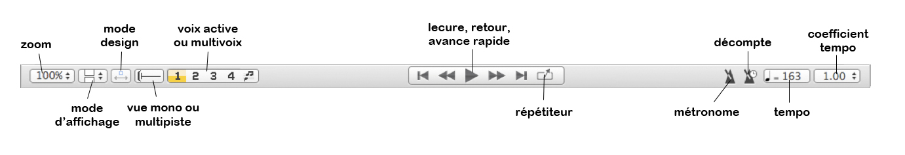
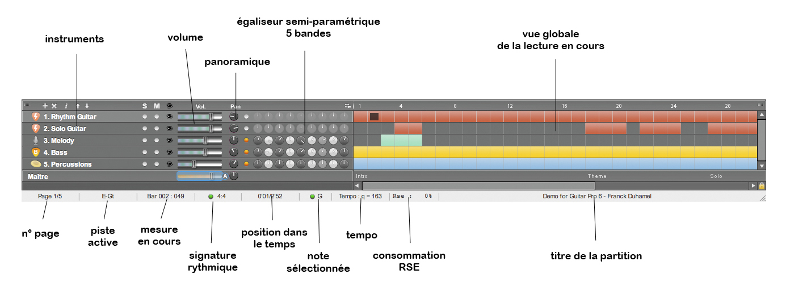

La nouvelle interface Guitar Pro 6 a été entièrement repensée et redessinée pour une meilleure ergonomie, tout en restant fidèle à ce qui fait l’identité de Guitar Pro (Edition, Son, Outils, Partage).
Elle consiste à présent en une partition mieux présentée, toujours plus lisible, accompagnée de 6 « Univers » rétractables permettant d’accéder en un clic à tous les outils nécessaires à l’édition, à la configuration du son et à l’ajout d’accords et de textes :
Cette présentation par Univers, associée à une conception généralement plus dynamique, constitue la signature Guitar Pro 6.

Contient tous les symboles permettant de saisir une partition, aussi bien en solfège qu'en tablature, voire en notation rythmique "slash". Il suffit de cliquer sur un bouton pour que l'attribut correspondant soit affecté à la note ou aux notes sélectionnées. Pour les symboles nécessitant une précision, une fenêtre s'ouvre afin d'attribuer le symbole désiré. Voir Ajouter des symboles.

Cet univers permet de régler les différents paramètres de la piste tels que l'accordage, la banque son, le capo, l'interprétation du jeu ...

Cet univers permet d'affecter à la piste en cours les effets voulus, ainsi que d'enregistrer des chaînes d'effets. Guitar Pro propose plus de 70 modélisations d'effets et d'amplificateurs. Voir Configurer le son.

Cet univers permet de traiter le signal à la sortie du mélangeur avec des effets de type compression, égalisation et réverbération. Voir Configurer le son.

Cet univers permet de constituer une librairie de diagrammes d'accords par l'intermédiaire de la fenêtre accords et d'un simple clic les affecter au temps en cours.

Cet univers permet d'éditer les paroles des chansons sur la piste mélodie, les paroles s'insèrent automatiquement au fur et à mesure que vous entrez les paroles, voir Ajouter des paroles.
Vous pouvez choisir de voir la partition en mode page (1 ou 2 pages
en largeur), en mode parchemin, écran horizontal ou vertical, en mode
plein écran. Il existe plusieurs degrés de zoom, un navigateur situé en
bas à gauche de la partition (qu'il est possible de masquer par le menu
Affichage > Afficher l'explorateur)
permet de se déplacer rapidement dans la partition. Voir Configurer
l'affichage.
Juste sous la partition, la barre de navigation vous offre une synthèse de vos options d’affichage :

La Table de Mixage, associée à la Vue Globale, permet un réglage audio de chaque piste et une vue synthétique du déroulement de la partition, dans laquelle on peut cliquer pour accéder directement à une mesure sur la partition. Il est aussi possible de faire une sélection multiple dans la vue globale (utile pour copier/coller de nombreuses mesures). Voir Configurer le son et Se déplacer dans la partition.

La barre d'état en bas (cf. image ci-dessus) affiche des informations sur la partition en cours. Placez votre souris sur les champs pour voir une bulle d'aide indiquer s'il y a une erreur et quelle est cette erreur (Hammer-On entre deux notes identiques, note hors tessiture, 5 noires sur une mesure 4/4, etc.)
Il s'agit d'une des grandes nouveautés de Guitar Pro 6, il est possible d'ouvrir jusqu'à 10 fichiers simultanément, facilitant le travail sur différents version d'un même morceau, les copier/coller entre fichiers différents et d'une manière générale le travail sur des morceaux différents. Les fichiers ouverts se mettent dans un nouvel onglet et sont sélectionnables par les onglets ou dans le menu Affichage. Voir Créer une nouvelle partition.